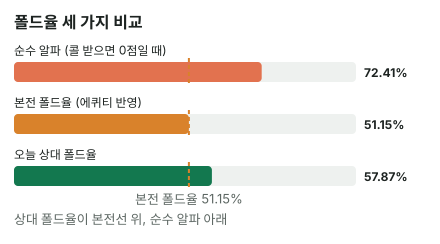

안녕하세요. A14에서 순수 블러프 3벳의 알파를 계산했죠. 그런데 A13에서 봤듯이 A5s 같은 핸드는 콜을 받아도 이길 기회가 남아 있어요.
오늘은 그 "남은 기회"를 숫자로 넣어요. 상대 오픈을 접는 핸드·콜하는 핸드·4벳하는 핸드로 나눠 세고, 3벳이 폴드보다 나아지는 선을 직접 구해 봐요.
이 글에서 배울 것
- 상대 반응을 폴드·콜·4벳 세 갈래로 나눠 세는 법
- 콜을 받았을 때의 에퀴티가 "잃는 돈" 칸을 줄여 본전 폴드율을 낮추는 원리
- 상대 폴드율 vs 본전 폴드율로 블러프 3벳을 판정하는 법, 그리고 그 판정이 뒤집히는 조건
오늘의 핸드
Hero (SB · 100BB)


프리플랍
SB 0.5BB(Hero), BB 1BB → 상대(BTN) 2.5BB 오픈 → Hero는 11BB로 3벳할까?
지금 팟 4BB. Hero는 0.5BB를 이미 냈으니 더 거는 돈은 10.5BB
결론부터 말할게요. 오늘 가정한 상대라면 폴드보다 3벳이 이득입니다. 상대 폴드율(약 57.87%)이 본전 폴드율(약 51.15%)보다 높아요.
남은 베팅이 있어 실제 결과는 달라질 수 있어요. 그래서 오늘은 금액(EV) 대신 상대 폴드율 vs 본전 폴드율로 판정해요. 본전 폴드율도 아래 3단계의 단순화(콜 받으면 리버까지 체크) 위에서 구한 기준이라, 실제로는 더 높을 수 있어요.
1단계. 순수 블러프라면 (A14)
알파 = 10.5 ÷ (4 + 10.5) = 약 72.41%
콜을 받으면 포기한다고 보면, 상대가 열 번 중 일곱 번 넘게 접어야 본전이에요. 이게 출발점이에요. 오늘은 여기서 얼마나 내려가는지를 봐요.
2단계. 상대 오픈을 세 갈래로 나누기 (가정 레인지 기준)
버튼 오픈 레인지를 22+, A2s+, K9s+, QTs+, JTs, T9s, 98s, ATo+, KJo+, QJo로 가정하고, 3벳에 이렇게 대응한다고 볼게요.
| 대응 | 핸드 | 콤보 | 비율 |
|---|---|---|---|
| 4벳 | QQ+, AK | 27 | 12.5% |
| 콜 | JJ-77, AQ, AJs, ATs, KQs, KJs, QJs, JTs | 64 | 약 29.63% |
| 폴드 | 나머지 | 125 | 약 57.87% |
| 합계 | 216 |
Hero의 A♠ 때문에 AA는 3콤보, AK는 12콤보로 줄어서 4벳 묶음이 27콤보예요. A13에서 본 블로커가 여기서 바로 숫자가 돼요.
오늘 정해 두는 가정 두 가지
- 4벳을 맞으면 Hero는 접어요. 더 건 10.5BB를 다 잃어요
- BB는 늘 접는다고 고정해요. 버튼 한 명과의 계산만 보려는 거예요. 실제로는 BB도 뒤에 남아 있어서(A14 문제 1), 필요한 폴드는 더 어려워요
3단계. 콜을 받으면 얼마나 잃을까
콜 받은 팟과 Hero 몫
콜을 받으면 팟은 23BB(Hero 11 + 버튼 11 + BB 1)가 돼요. 오늘은 리버까지 체크로 간다고 단순화할게요. 콜 레인지 상대로 Hero 에퀴티는 약 39.01%예요(프리플랍 몬테카를로).
Hero 몫 = 23 × 0.3901 = 약 8.97BB
순수 블러프와 다른 점
10.5BB를 더 넣고 8.97BB만큼을 돌려받는 셈이에요.
콜 받을 때 잃는 돈 = 10.5 − 8.97 = 약 1.53BB
순수 블러프였다면 콜을 받을 때 10.5BB를 다 잃는다고 봤죠. 에퀴티를 넣으니 콜 받을 때 손해가 1.53BB쯤으로 확 줄어요.
이게 무슨 뜻이냐면, A5s의 3벳에서 "콜을 받는 것"은 큰 실패가 아니라 작은 손해예요. 이 차이가 본전 폴드율을 끌어내려요.
4단계. 본전 폴드율 구하기
같은 틀: 잃을 돈 ÷ (잃을 돈 + 얻을 돈)
A01·A14의 알파 틀은 그대로예요. 본전 폴드율 = 안 접을 때 평균으로 잃는 돈 ÷ (그 돈 + 지금 팟 4BB).
다만 "안 접을 때"가 두 가지라, 그 둘을 섞어 평균 손해 하나로 만들어야 해요.
- 4벳: 10.5BB를 다 잃음
- 콜: 약 1.53BB 잃음
섞는 비율
안 접는 핸드(콜 64 + 4벳 27) 91개 가운데 콜이 약 70.33%, 나머지가 4벳이에요. 이 비율이 정해져야 안 접을 때 평균 손해가 하나로 정해져요. 그래서 오늘은 콜과 4벳의 비율은 그대로 두고, 폴드율만 바뀐다고 보고 선을 구해요.
4벳 비율은 1 − 0.7033 = 0.2967이에요. 콜 받을 때 잃는 돈을 소수 넷째 자리까지 쓰면 1.5268이고요.
안 접을 때 평균 손해 = 0.7033 × 1.5268 + 0.2967 × 10.5 = 1.0738 + 3.1154 = 약 4.1892 본전 폴드율 = 4.1892 ÷ (4.1892 + 4) = 약 51.15%
한눈에 비교
| 폴드율 | |
|---|---|
| 순수 블러프 알파 | 약 72.41% |
| 본전 폴드율(콜 받을 때 에퀴티 반영) | 약 51.15% |
| 오늘 상대 폴드율 | 약 57.87% |

상대 폴드율이 본전 폴드율보다 높아서 폴드보다 3벳이 이득이에요. 순수 알파만 봤다면 57.87% < 72.41%라 손해로 잘못 판단했을 거예요.
왜 그럴까: 알파의 "잃는 돈" 칸이 작아져서
알파는 결국 잃는 돈과 얻는 돈의 저울이에요. 얻는 돈(지금 팟 4BB)은 그대로인데, 잃는 돈 칸에 10.5BB 대신 약 4.1892가 들어가니 저울이 확 기울죠.
남은 손해는 대부분 4벳에서 나와요
4단계 식을 다시 보면, 평균 손해 4.1892 중 3.1154가 4벳 몫이고 콜 몫은 1.0738뿐이에요. 4벳은 안 접는 핸드의 3분의 1도 안 되는데, 손해의 4분의 3 가까이를 차지해요. 4벳에는 10.5BB를 다 잃으니까요.
그래서 4벳 묶음을 줄이는 블로커가 이렇게 중요해요. A♠ 한 장이 AA·AK를 줄여 4벳 콤보를 덜어 내면, 평균 손해에서 가장 큰 덩어리가 작아져요.
두 기준이 하나의 저울로
잃는 돈이 줄어든 건 두 가지 덕분이에요. 콜을 받아도 39.01%로 팟 일부를 가져오고(콜 받았을 때 남는 힘), A 블로커로 4벳 묶음이 줄었어요(다 잃는 경우가 줄어듦). A13에서 블러프 3벳 핸드를 고른 두 기준이 그대로 숫자가 된 거예요.
자주 하는 실수
실수 1. 순수 알파만 보고 블러프 3벳을 접기 오늘 상대 폴드율 57.87%는 순수 알파 72.41%에 한참 못 미쳐요. 여기서 멈추면 이득인 3벳을 버려요. 콜 받았을 때 에퀴티가 있는 핸드는 본전 폴드율까지 내려서 비교해요.
실수 2. 콜과 4벳을 한 덩어리로 보기 안 접는 핸드를 다 "콜"로 치면 4벳에 다 잃는 몫이 빠지고, 다 "4벳"으로 치면 순수 알파로 돌아가요. 오늘처럼 콜 70.33% : 나머지 4벳으로 섞어야 평균 손해가 맞게 나와요.
실수 3. "콜 받았을 때 에퀴티가 39%면 거의 반이니 문제없다" 39.01%라도 23BB 팟에서 10.5BB를 넣으면 1.53BB쯤을 잃어요. 콜을 받는 건 여전히 손해고, 3벳의 이득은 폴드에서 나와요. 에퀴티는 그 손해를 줄여 줄 뿐이에요.
"콜 받으면 리버까지 체크라는 건 너무 단순하지 않아요?"
맞아요. SB는 플랍부터 먼저 행동해야 해서, 계산된 에퀴티를 다 가져가기 어려워요(I31에서 배웠죠). 상대가 플랍·턴에 벳하면 Hero가 에퀴티를 남긴 채 접는 일도 생기고요.
그래서 실제 본전 폴드율은 오늘 51.15%보다 높을 수 있어요. 오늘 계산은 "콜을 받아도 에퀴티가 있으면 필요한 폴드율이 내려간다"는 원리와, 그 크기가 어느 정도인지를 보는 데 써요.
숫자가 뒤집히는 지점
- 상대가 넓게 콜하면 상대 폴드율과 본전 폴드율이 둘 다 내려가요. 기준은 상대 폴드율이 본전 폴드율 아래로 내려가는지예요
- Hero 핸드의 콜 받았을 때 에퀴티가 낮을수록 "잃는 돈" 칸이 커져 본전 폴드율이 올라가요
- 블로커가 없어 4벳 묶음이 커지면 다 잃는 몫이 늘어 본전 폴드율이 올라가요
선생님의 한마디
블러프 3벳 후보가 둘이라면 이 두 가지만 비교해요.
- 어느 쪽이 4벳 콤보를 더 줄이나(손해의 큰 덩어리)
- 어느 쪽이 콜을 받아도 덜 밀리나(손해의 작은 덩어리)
둘 다 앞서는 핸드가 더 적게 접어 줘도 되는 블러프예요.
연습 문제
학습툴 에퀴티 계산기의 레인지 입력은 확인 중이에요. 지금은 정답의 숫자(블로그에서 직접 계산한 값)를 따라가 보고, 학습툴에는 핸드 대 핸드(예: A♠5♠ 대 J♥J♦)만 넣어 콜 받았을 때 에퀴티를 느껴 보세요.
문제 1. 같은 Hero A♠5♠인데, 이 상대는 3벳에 넓게 콜해요(JJ-22, AQs-A2s, AQo, AJo, KQs, KJs, KTs, QJs, QTs, JTs, T9s, 98s). 4벳은 그대로 QQ+, AK예요. 콜 레인지 상대 Hero 에퀴티는 약 42.85%(계산기 값)예요. 폴드·콜·4벳 콤보를 세고, 본전 폴드율과 비교해 보세요.
정답 보기
폴드 49콤보(약 22.69%), 콜 140콤보(약 64.81%), 4벳 27콤보(12.5%). 콜 레인지 상대 에퀴티 약 42.85%. 콜 받을 때 손해가 작아지고(약 −0.64BB) 콜 비중도 커서, 본전 폴드율은 약 35.87%까지 내려가요. 하지만 상대 폴드율 약 22.69%가 그보다 더 낮아요 → 이 상대에게 블러프 3벳은 손해예요.
문제 2. 상대는 오늘과 같고, Hero 핸드가 K♦7♣라면? 콜 레인지 상대 Hero 에퀴티는 약 33.23%(계산기 값)예요.
정답 보기
오픈 콤보가 225로 늘어요. A♠5♠는 A가 많은 버튼 오픈 레인지에서 A-x 콤보를 많이 지웠는데, K♦7♣는 그보다 적게 지우거든요. 225콤보 중 폴드 133콤보(약 59.11%), 콜 65콤보, 4벳 27콤보(12%). 콜 레인지 상대 에퀴티 약 33.23%. 콜 받을 때 손해가 약 −2.86BB로 커서 본전 폴드율이 약 56.04%로 올라가요. 상대 폴드율 약 59.11%보다는 낮아 아슬아슬하게 이득이지만, A5s(본전 약 51.15%)보다 여유가 훨씬 작아요. K♦도 상대 KK·AK를 줄여서 4벳 묶음은 똑같이 27콤보예요. 차이는 콜 받았을 때 에퀴티예요. 수딧도 아니고 연결도 안 된 K7o는 콜을 받으면 약 33.23%로, A5s(약 39.01%)보다 더 밀려요.
핵심 정리
- 블러프 3벳의 판정 기준은 상대 폴드율 vs 본전 폴드율(이번 결정 기준)
- 본전 폴드율 = 안 접을 때 평균 손해 ÷ (그 손해 + 지금 팟). 알파와 같은 틀이에요
- 안 접을 때 평균 손해는 콜 받을 때 손해와 4벳에 다 잃는 돈을 콜·4벳 비율로 섞은 값이에요
- 콜 받았을 때 에퀴티와 블로커가 그 손해를 줄여, 본전 폴드율을 순수 알파보다 낮춰요
정리하며
오늘은 SB에서 A5s로 하는 블러프 3벳을 폴드·콜·4벳 세 갈래로 나눠 계산했어요.
순수 알파는 72.41%였지만, 콜을 받아도 39.01%로 23BB 팟의 일부를 가져와 콜 받을 때 손해가 약 1.53BB로 줄었죠. 그 덕에 본전 폴드율이 51.15%로 내려가, 57.87% 접는 상대에게는 폴드보다 3벳이 이득이었어요. 실전에서는 "이 핸드는 콜을 받으면 얼마나 잃고, 4벳을 얼마나 줄이나"를 먼저 떠올려 보세요.
다음 글 A16에서는 3벳이 콜을 받은 뒤의 팟을 봐요. 프리플랍에 돈이 많이 들어간 3벳 팟에서 SPR이 어떻게 달라지고, 왜 플랍부터 큰 결정이 오는지 다뤄요.
AI 작성 · 숫자는 계산 검증 (콤보는 하나씩 셈, 에퀴티는 프리플랍 몬테카를로) · 가정 레인지 기준 (솔버 결과 아님) · 콜 받으면 리버까지 체크로 간다고 단순화 · BB는 늘 폴드, 4벳을 맞으면 Hero는 폴드한다고 가정 · 이번 한 번의 결정 기준